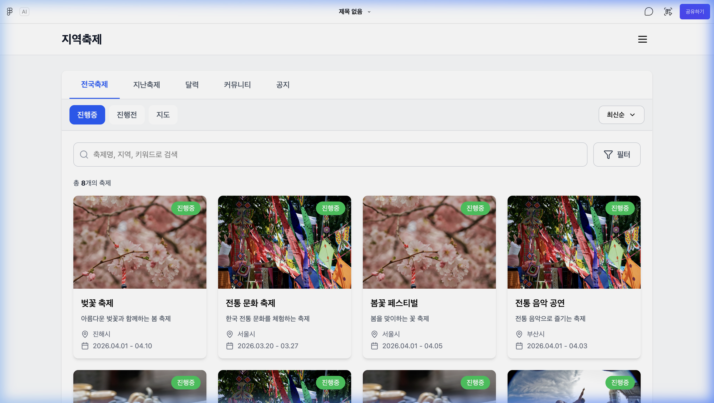

1
2
3
4
5
6
Description
Summary.
- 전국의 진행중인 축제를 카드형 리스트로 조회하는 콘텐츠 영역
- 검색, 필터, 정렬 기능을 통해 원하는 축제를 빠르게 탐색 가능
- 공공 API 데이터 + 자체 등록 축제 데이터 통합 제공
| 1 |
탭 네비게이션 전국축제 | 지난축제 | 달력 | 커뮤니티 | 공지 현재 선택된 탭에 하단 파란색 밑줄로 활성 상태 표시 |
| 2 |
진행 상태 필터 버튼 · 진행중 (기본 선택, 파란색 활성화) - 현재 진행중인 축제만 표시 · 진행전 - 예정된 축제 목록 표시 · 지도 - 지도 뷰로 전환하여 축제 위치 확인 |
| 3 |
정렬 드롭다운 "최신순" 기본 선택 클릭 시 정렬 옵션 표시 (최신순, 인기순 등) |
| 4 |
검색바 + 필터 버튼 축제명, 지역, 키워드로 축제 검색 가능 우측 "필터" 버튼 클릭 시 상세 필터 (지역별, 카테고리별) 모달 표시 |
| 5 |
축제 카운트 표시 현재 필터 조건에 맞는 축제 총 갯수를 표시 예: "총 8개의 축제" |
| 6 |
축제 카드 리스트 4열 그리드 레이아웃으로 축제 카드 배치 (총 8개, 2행) 각 카드 구성: · 축제 대표 이미지 (상단) · 진행 상태 태그 ("진행중" 초록색 배지) · 축제명 (굵은 텍스트) · 축제 한줄 설명 · 위치 (📍 아이콘 + 지역명) · 기간 (📅 아이콘 + 날짜 범위) 카드 클릭 시 해당 축제 상세 페이지로 이동 |
Check Point
· 카드 클릭 시 축제 상세 페이지 (/festival/{id})로 이동
· 검색/필터 결과에 따라 카운트와 카드 목록이 동적으로 갱신
· 지도 버튼 클릭 시 지도 뷰로 전환
· 축제 데이터가 많을 경우 페이지네이션 적용